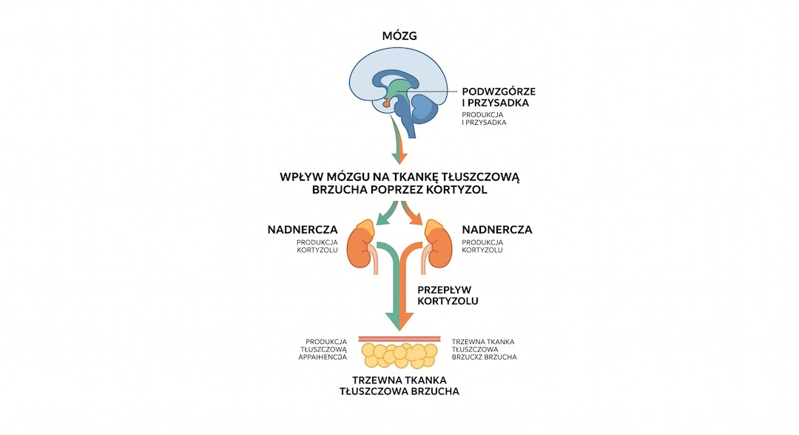
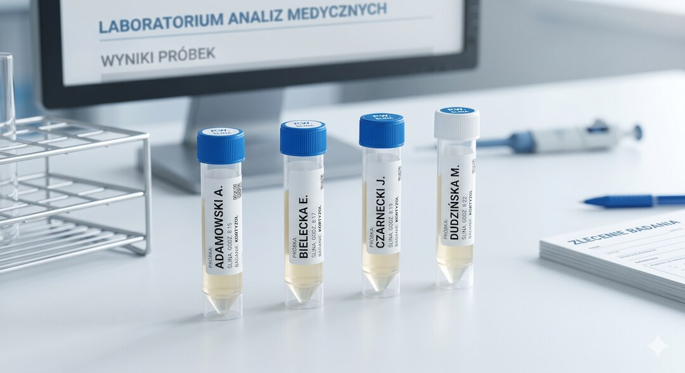
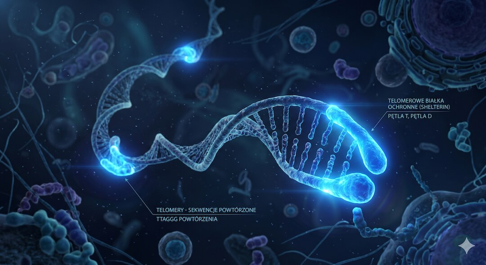

Ćwiczysz, jesz rozsądnie, a brzuch rośnie albo sen robi się coraz płytszy? Kortyzol może być częścią układanki, ale nie jest magicznym winowajcą. Po 50-tce liczy się przede wszystkim jego rytm: wysoko rano, nisko wieczorem. Ten tekst pokazuje, jak stres, sen, kawa, trening i mięśnie łączą się w jeden praktyczny plan działania.
Szybka odpowiedź
Kortyzolu po 50-tce nie „zbija się” na siłę. Trzeba przywrócić rytm: 7-8 godzin snu, stała pora wstawania, poranne światło, kofeina nie po południu, 20-40 minut marszu i 2-3 spokojne treningi siłowe tygodniowo. Jeśli dochodzą szybkie chudnięcie, nadciśnienie, siniaczenie, osłabienie mięśni albo cukier wymyka się spod kontroli, to temat dla lekarza, nie dla suplementu.
Kluczowe wnioski
- Nie chodzi o samo „zbicie kortyzolu”, tylko o zdrowy rytm: wyższy rano, niski wieczorem, bez całodobowego alarmu.
- Największe dźwignie to sen 7-8 godzin, stała pora wstawania, poranne światło, marsz i ograniczenie kofeiny po południu.
- Trening siłowy pomaga, ale po 50-tce powinien mieć przerwy: 2-3 sesje tygodniowo zwykle działają lepiej niż codzienne zajeżdżanie.
- Alkohol wieczorem, późne duże posiłki i ekran przed snem potrafią utrzymać kortyzol wysoko wtedy, gdy ciało powinno już hamować.
- Badanie kortyzolu ma sens przy konkretnych objawach; pojedynczy poranny wynik z krwi nie opisuje całego rytmu dobowego.
Dlaczego kortyzol po 50-tce odkłada tłuszcz właśnie na brzuchu?
Kortyzol to hormon wytwarzany przez nadnercza w odpowiedzi na stres. Jego głównym zadaniem jest szybkie uwolnienie glukozy do krwi, by dać nam energię do działania. Choć ten mechanizm ratuje życie w nagłych wypadkach, staje się obciążeniem, gdy żyjemy w ciągłym napięciu przez wiele miesięcy.
Tłuszcz trzewny, który otacza narządy wewnętrzne głęboko pod mięśniami, jest niezwykle wrażliwy na hormon stresu. Przewlekłe napięcie daje organizmowi wyraźny sygnał: gromadź zapasy w pasie na trudne czasy. O tym, dlaczego ta tkanka jest tak niebezpieczna dla zdrowia, przeczytasz w tekście Tłuszcz trzewny – choroby i jak z nim walczyć.
Co gorsza, kortyzol podnosi poziom insuliny we krwi, co niemal całkowicie blokuje spalanie tkanki tłuszczowej. Mamy więc do czynienia z podwójną pułapką: hormon stresu zmusza do odkładania zapasów i jednocześnie nie pozwala ich zużywać. Właśnie dlatego same brzuszki nie pomogą, dopóki nie zajmiemy się wyciszeniem układu nerwowego.

Czy stres po 50-tce jest biologicznie inny niż w młodości?
Zdecydowanie tak. Po pięćdziesiątce nasza biologia ulega głębokim zmianom. U kobiet menopauza drastycznie obniża poziom estrogenów, które wcześniej łagodziły działanie hormonów stresu. U mężczyzn spada poziom testosteronu. W rezultacie te same codzienne kłopoty wywołują u nas dłuższą i bardziej wyczerpującą reakcję nerwową niż w wieku trzydziestu lat.
Napięcie niszczy też jakość nocnego wypoczynku, o który po pięćdziesiątce i tak bywa trudniej. Zmęczenie i brak głębokiej fazy snu z kolei drastycznie podnoszą poranny wyrzut kortyzolu. Wpadamy w błędne koło: nerwy psują noc, a niewyspanie potęguje stres od samego rana. Jak z tego wyjść? Przeczytaj nasz poradnik Sen po 50-tce – jak naprawdę wpływa na zdrowie i wagę.
Każdy z nas starzeje się we własnym tempie. Genetyka, poziom codziennej aktywności, nawyki żywieniowe oraz to, jak traktowaliśmy swoje ciało przez ubiegłe dekady – wszystko to decyduje o tym, jak sprawnie radzimy sobie dziś z obciążeniem psychicznym.
Kiedy i jak zbadać poziom kortyzolu – krew czy ślina?
Poziom kortyzolu podlega wyraźnemu rytmowi dobowemu. Najwyższe stężenie osiąga rano, dając nam siłę do wstania z łóżka, a najniższe wieczorem, by ułatwić sen. Z tego powodu jednorazowe pobranie krwi w przychodni daje tylko ułamek prawdy i nie pokazuje, jak poziom hormonu zachowuje się w ciągu całego dnia.
Tradycyjne badanie z krwi: wykonywane rano na czczo (normy referencyjne w laboratoriach wynoszą zazwyczaj ok. 6–23 µg/dl). Służy głównie wykluczeniu poważnych chorób nadnerczy. Niestety, u osób wrażliwych sam pośpiech, jazda do punktu pobrań i kłucie igłą mogą fałszywie podnieść wynik.
Dobowy profil ze śliny (4 punkty): polega na samodzielnym pobraniu próbek w domu: rano, w południe, po południu i tuż przed snem. Daje to pełen wykres dobowy. Lekarz może dzięki temu ocenić, czy hormon wieczorem prawidłowo opada, pozwalając na wyciszenie i regenerację.
Jeśli rano budzisz się bez sił, łatwo wpadasz w irytację, a wieczorem nie możesz zasnąć przez natłok myśli – warto porozmawiać z lekarzem o wykonaniu takiego profilu dobowego.

Trening siłowy a kortyzol – czy intensywny wysiłek może zaszkodzić po 50-tce?
Każdy trening fizyczny przejściowo podnosi poziom kortyzolu. Tyczy się to również umiarkowanych obciążeń i jest konieczne do pobudzenia mięśni do wzrostu. Problem pojawia się, gdy ćwiczymy zbyt ciężko i zapominamy o odpoczynku. Bez odpowiedniej regeneracji fundujemy organizmowi ciągły stan alarmowy, co powoduje stały, wysoki poziom hormonu stresu.
Po pięćdziesiątce regeneracja tkanek zachodzi wolniej. Naturalne hormony sprzyjające odnowie biologicznej spadają, więc mięśnie potrzebują więcej czasu na odpoczynek. Intensywny, wycieńczający trening, który dla trzydziestolatka jest prostym wyzwaniem, u osoby dojrzałej może skończyć się głębokim wyczerpaniem i osłabieniem odporności.
Wniosek? Przemyślany trening siłowy po 50-tce jest kluczem do zachowania sprawności i absolutnie warto go stosować. Kluczem jest jednak zasada „mniej, a mądrzej”: 2 lub 3 umiarkowane sesje w tygodniu, przedzielone dniami pełnego odpoczynku, przyniosą znacznie lepsze efekty niż codzienne forsowanie ciała.
Dlaczego spokojny spacer w strefie 2 bije crossfit w walce o kortyzol?
W sporcie „Strefa 2” oznacza tętno, przy którym serce bije szybciej, a ciało lekko się rozgrzewa, ale wciąż możesz swobodnie rozmawiać bez zadyszki. Dla osób po pięćdziesiątce to zazwyczaj przedział 100–115 uderzeń na minutę. Taki ruch nie wywołuje wyrzutu kortyzolu, za to skutecznie obniża jego spoczynkowy poziom w ciągu dnia.
Badania naukowe potwierdzają: miarowy, spokojny ruch bez przeciążania serca to najlepszy darmowy lek na skołatane nerwy. Energiczny, 45-minutowy spacer w parku (np. z kijkami do Nordic Walking) wycisza układ współczulny. Przynosi to znacznie lepsze rezultaty w walce z oponką brzuszną niż mordercze treningi interwałowe.
Nie oznacza to, że masz unikać ciężarów. Pamiętaj jednak: jeśli Twoim problemem jest oponka brzuszna, przewlekłe zmęczenie i praca w ciągłym napięciu, to zbyt ciężki trening będzie dla organizmu kolejnym silnym źródłem stresu. Więcej o tym piszemy w artykule Tłuszcz trzewny – choroby i jak z nim walczyć.
Jak przewlekły stres skraca telomery i przyspiesza biologiczne starzenie?
Telomery to ochronne zakończenia naszych chromosomów, które przypominają plastikowe skuwki na sznurówkach. Z wiekiem naturalnie się skracają, mierząc czas życia komórek. Badania wykazały jednak, że przewlekły stres drastycznie przyspiesza ten proces, co może postarzeć nasz organizm biologicznie nawet o kilkanaście lat w stosunku do wieku metrykalnego.
Dzieje się to po cichu. Stale podwyższony kortyzol nasila stany zapalne w tkankach i blokuje aktywność telomerazy – jedynego enzymu zdolnego do odbudowy i ochrony tych komórkowych tarcz ochronnych.
Na szczęście biologia potrafi być elastyczna. Obniżenie poziomu stresu i nauka relaksu mogą spowolnić, a nawet częściowo odwrócić ten proces. Oprócz codziennego wyciszenia pamiętaj o regularnej kontroli zdrowia. Wykonując rutynowe, coroczne badania profilaktyczne po 50-tce, poproś lekarza o zbadanie poziomu białka CRP, które wskaże ewentualny utajony stan zapalny w organizmie.

Czy sen naprawdę reguluje kortyzol po 50-tce?
Sen jest najtańszym regulatorem kortyzolu, ale działa tylko wtedy, gdy jest regularny. Kortyzol powinien być wysoki rano i niski wieczorem. Jedna krótka noc potrafi podnieść wieczorny kortyzol następnego dnia, czyli dokładnie wtedy, gdy organizm powinien już hamować, a nie mobilizować się do walki.
To dlatego niewyspanie tak często daje dwa objawy naraz: większą ochotę na słodkie i trudniejsze zasypianie kolejnej nocy. Organizm jest zmęczony, ale układ stresu nie schodzi z obrotów. Po 50-tce ten mechanizm mocniej uderza w regenerację, ciśnienie, apetyt i kontrolę glukozy.
Wniosek praktyczny: jeśli masz wybrać tylko jedną rzecz, zacznij od stałej godziny snu i pobudki przez 14 dni. Dopiero potem oceniaj, czy potrzebujesz suplementów, badań lub mocniejszych interwencji.
- Najważniejszy jest spadek kortyzolu wieczorem, nie sama pojedyncza liczba z badania.
- Krótki sen może utrwalać błędne koło: stres, pobudzenie, gorsze zasypianie.
- Poranne światło pomaga ustawić rytm dobowy, a ciemny wieczór pomaga go domknąć.
Czy kawa i trening podbijają kortyzol na stałe?
Kawa i trening mogą chwilowo podnieść kortyzol, ale to nie znaczy, że są wrogami. Problem zaczyna się wtedy, gdy kofeina przykrywa niewyspanie, a intensywny trening dokłada się do pracy, stresu i braku regeneracji. Wtedy nie masz jednego bodźca, tylko cały dzień biologicznego poganiania.
Umiarkowany ruch działa odwrotnie: poprawia odporność na stres i pomaga obniżyć poziom napięcia bazowego. Dlatego po 50-tce lepiej myśleć o treningu jak o dawkowaniu leku. Spacer w strefie 2, rower, pływanie lub spokojna siłownia trzy razy w tygodniu zwykle pomogą bardziej niż codzienne zajeżdżanie się.
Wniosek praktyczny: nie demonizuj kawy ani treningu. Przenieś kawę wcześniej, zostaw ciężkie jednostki na dni po dobrym śnie i traktuj zadyszkę jako informację, a nie dowód charakteru.
- Kofeina na niewyspanie to najczęstszy sposób dolewania paliwa do układu stresu.
- Trening ma podbijać kortyzol krótko, a nie trzymać organizm w alarmie przez cały dzień.
- Jeśli po ćwiczeniach śpisz gorzej, obniż intensywność albo przesuń trening wcześniej.
Jak kortyzol wpływa na mięśnie i siłę po 50-tce?
Kortyzol nie tylko miesza w brzuchu. Przy przewlekłym stresie organizm częściej sięga po aminokwasy z mięśni, żeby utrzymać dostępność glukozy. Jednorazowo to normalny mechanizm przetrwania. Problem zaczyna się wtedy, gdy taki sygnał trwa tygodniami, a regeneracja, białko i sen nie nadążają.
Po 50-tce ma to większe znaczenie, bo naturalnie trudniej budować i utrzymać masę mięśniową. Jeśli dołożysz zbyt mało snu, zbyt mało kalorii, za dużo treningów na maksa i ciągłe napięcie psychiczne, kortyzol zaczyna pracować przeciwko sile. To nie znaczy, że masz nie ćwiczyć. To znaczy, że siła rośnie dopiero wtedy, gdy trening ma z czego się odbudować.
Wniosek praktyczny: przy wysokim stresie nie rezygnuj z siłowni, tylko uprość plan. Dwa lub trzy treningi siłowe tygodniowo, zapas 2-3 powtórzeń w serii, białko w każdym głównym posiłku i sen są rozsądniejsze niż heroiczna walka z organizmem.
- Przewlekły kortyzol sprzyja katabolizmowi, czyli rozkładaniu tkanek na energię.
- Największym ryzykiem po 50-tce jest połączenie stresu, braku snu i zbyt ostrego deficytu kalorii.
- Mięśnie chronią metabolizm, dlatego obniżanie kortyzolu bez treningu siłowego jest niepełne.
Jak obniżyć kortyzol wieczorem – trzy metody mające dowód naukowy?
Wieczór to kluczowy moment doby – wtedy poziom kortyzolu musi opadać. Jeśli pozostaje wysoki, blokuje wydzielanie melatoniny (hormonu snu) i skazuje nas na bezsenne czuwanie. Oto trzy sprawdzone, poparte nauką metody, które pomogą wyciszyć układ nerwowy i przygotować organizm do głębokiego, spokojnego snu:
1. Higiena snu i stałe godziny. CDC podaje, że osoby 61-64 lata zwykle potrzebują 7-9 godzin snu, a po 65. roku życia 7-8 godzin. Na godzinę przed położeniem się do łóżka wyłącz ekrany, nie jedz ciężkiej kolacji, nie pij alkoholu i utrzymuj sypialnię chłodną. Zasady te szczegółowo opisujemy w artykule Sen po 50-tce – jak naprawdę wpływa na zdrowie i wagę.
2. Głęboki oddech przeponowy. To najprostszy sposób na szybkie pobudzenie układu przywspółczulnego. Poświęć 4 minuty przed snem na oddychanie „do brzucha” z wydłużonym wydechem (np. wdech na 4 sekundy, wydech na 6). Sygnalizuje to mózgowi, że jesteśmy bezpieczni, co automatycznie wygasza produkcję hormonów walki.
3. Wsparcie naturalne. Przed snem warto rozważyć suplementację magnezem (np. w formie cytrynianu), który rozluźnia mięśnie i wycisza układ nerwowy. Popularny adaptogen, ashwagandha, również wykazuje silne działanie obniżające poziom kortyzolu. Pamiętaj jednak: przy chorobach tarczycy, serca lub przyjmowaniu leków na nadciśnienie, skonsultuj jej stosowanie z lekarzem prowadzącym.
- Rano wstawaj konsekwentnie zawsze o tej samej porze – organizuj w ten sposób solidny fundament zegara biologicznego, który uspokaja hormony.
- Po ciężkim dniu wybierz krótki spacer, unikając zmęczenia siłowego. Niskie tętno to gwarancja wyciszenia nerwów tuż przed pościelą.
- Zakręć ciepły kaloryfer, przewietrz sypialnię i zablokuj światło z ulicy. Chłód w ciemności idealnie pobudza zdrową nocną melatoninę!
Najczęściej zadawane pytania
Dlaczego wysoki kortyzol odkłada tłuszcz zaledwie w rejonie brzucha?
Tkanka tłuszczowa trzewna w okolicach brzucha posiada znacznie więcej receptorów dla kortyzolu niż tłuszcz podskórny w innych miejscach ciała. W warunkach chronicznego stresu organizm traktuje to jako sygnał alarmowy i celowo magazynuje energię wokół kluczowych narządów, jednocześnie blokując procesy jej spalania.
Jaki jest optymalny i zdrowy poziom kortyzolu z rana na badaniu w laboratorium?
Poranny pomiar z krwi (wykonywany na czczo, norma to ok. 6–23 µg/dl) wyklucza głównie skrajne stany patologiczne. Znacznie dokładniejszy jest 4-punktowy profil dobowy ze śliny. Pozwala on zaobserwować naturalne wahania hormonu w ciągu dnia oraz zidentyfikować wieczorne spłaszczenie krzywej, które negatywnie wpływa na metabolizm.
Jak samodzielnie obniżyć groźny stres w bezpieczny sposób bez użycia twardych leków z recepty?
Badania naukowe wskazują na skuteczność umiarkowanej aktywności fizycznej w strefie tlenowej (np. szybki spacer na świeżym powietrzu w strefie 2 tętna). Drugim kluczowym elementem są codzienne, kilkuminutowe ćwiczenia oddechowe z wydłużonym wydechem, które bezpośrednio stymulują nerw błędny i obniżają poziom stresu.
W jakich dokładnie konkretnych momentach ten groźny kortyzol rośnie najmocniej, co to tak naprawdę dzisiaj oznacza?
Kortyzol naturalnie rośnie o świcie (tzw. poranny wyrzut), aby dać nam energię do wybudzenia i działania. W ciągu dnia powinien powoli opadać. Najgroźniejszy dla zdrowia jest wysoki poziom tego hormonu późnym wieczorem i w nocy – zaburza on gospodarkę cukrową, utrudnia regenerację komórek i wywołuje stany lękowe.
Czy szybki trening obwodowy z hantlami może popsuć poziom stresu u dojrzałych kobiet i mężczyzn na diecie odchudzającej?
Tak. Zbyt częsty i wyczerpujący trening oporowy (np. obwodowy bez przerw na odpoczynek), połączony z dużym deficytem kalorycznym, jest dla dojrzałego organizmu silnym stresorem fizjologicznym. Bez odpowiedniego czasu na regenerację nadnercza stale produkują kortyzol, co wywołuje skutek odwrotny od zamierzonego.
Obwód pasa, tłuszcz trzewny, kortyzol i nawyki wspierające metabolizm omawiamy szerzej w Centrum Metabolizmu i Brzucha po 50-tce.
Źródła
- Thau L et al. – Physiology, Cortisol. StatPearls (2023)
- van der Valk ES et al. – Stress and Obesity: Are There More Susceptible Individuals? Current Obesity Reports (2018)
- Epel ES, Blackburn EH et al. – Accelerated telomere shortening in response to life stress. PNAS (2004)
- Chrousos GP – Stress and disorders of the stress system. Nature Reviews Endocrinology (2009)
- Kraemer WJ, Ratamess NA – Hormonal responses and adaptations to resistance exercise and training. Sports Medicine (2005)
- Stults-Kolehmainen MA, Sinha R – The effects of stress on physical activity and exercise. Sports Medicine (2014)
- Adam EK, Kumari M – Assessing salivary cortisol in large-scale epidemiological research. Psychoneuroendocrinology (2009)
- Boutcher SH – High-Intensity Intermittent Exercise and Fat Loss. Journal of Obesity (2011)
- Rosmond R, Björntorp P – HPA axis activity as predictor of cardiovascular disease and type 2 diabetes. Journal of Internal Medicine (2000)
- Chandrasekhar K et al. – Safety and efficacy of high-concentration Ashwagandha root extract in reducing stress and anxiety. Indian J Psychol Med (2012)
- Langade D et al. – Efficacy and Safety of Ashwagandha Root Extract in Insomnia and Anxiety. Cureus (2019)
- Leproult R et al. – Sleep loss results in an elevation of cortisol levels the next evening. Sleep (1997)
- Systematic review – Coffee, caffeine and cortisol response. Journal of Nutrition (2022)
- Sanada K et al. – Mindfulness-based interventions and biomarkers including cortisol. Health Psychology Review (2020)
- CDC: About Sleep — recommended sleep duration and sleep habits (2024)
Uwaga: Artykuł ma charakter informacyjny i edukacyjny. Nie zastępuje konsultacji lekarskiej, diagnozy ani leczenia.